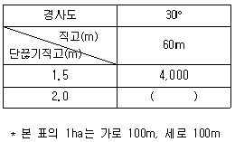

자연생태복원기사(구) (2005-05-29 기출문제)
1과목: 환경생태학개론
1. 생태계 내에서 인(P)의 순환에 대한 내용으로 옳지 않은 내용은?
- 인의 내부순환은 인을 함유한 유기물들이 분해되어 토양이나 담수생태계로 유출되며 식물에 흡수된 후, 먹이망을 통해 동물로 전달되어 그 사체나 배설물이 미생물에 의해 분해되어 다시 토양이나 담수생태계로 전달되어 진다.
- 인간은 각종 산업생산품이나 인산질 비료를 조제하기 위해 인을 함유한 암석을 개발하는 인위적인 과정들에서 생태계의 인 순환에 중대한 영향을 미친다.
- 수중 생태계에 과다하게 유입된 인은 질소(N)와 더불어 심각한 부영양화를 일으키는 요인이 된다.
- 수중에 유입된 용존성 인산은 적조현상(red tide)등 조류 발생의 원인이 되지만 하수 처리장에서 높은 효율로 처리될 수 있으므로 수질오염에는 크게 영향을 끼치지 못한다.
(정답률: 알수없음)

2. 개체군 생장형 중에서 S자형(sigmoid growth form) 생장곡선을 그리는 개체군의 특성으로 가장 바르게 설명한 것은?
- 초기에는 서서히 생장하다가 다음에는 급속히 생장하고 나중에는 점차 생장이 떨어져 거의 평형상태를 나타낸다.
- 처음부터 급격히 생장하다가 환경저항 또는 다른 제한 요인이 가해지게 되면 그 생장이 급격하게 정지된다.
- 초기에는 급속히 생장하다가 그 후 완만한 생장시기를 거쳐 다시 급속한 생장을 한 후 평형상태를 나타낸다.
- 초기부터 중간이후까지 서서히 생장한 후, 마지막에 급속한 생장을 지속하다가 환경요인과 관계없이 서서히 생장이 정지된다.
(정답률: 알수없음)
3. 다음 중 생태계 내의 에너지에 대한 설명으로 가장 부적당한 것은?
- 일정한 생태계 내에서 에너지는 물질과 함께 순환하여 소멸되지 않는다.
- 고사한 식물체나 초식동물이 소화할 수 없는 배설물의 에너지는 분해자가 이용한다.
- 광합성으로 유기물에 저장된 에너지의 일부는 녹색식물의 생장과 유지를 위한 호흡으로 이용된다.
- 생물은 성장과 생식을 위해 에너지를 필요로 하며 원형질 형성, 조직 갱신과 기초대사 등에 이용된다.
(정답률: 알수없음)
4. 다음 중 토양이 산성화되어 식물에 미치는 영향으로 부적당한 것은?
- 뿌리에 산성용액이 흡수되면 식물체 내의 단백질을 응고시키거나 용해시켜 직접적인 피해를 준다.
- 중금속이 용해되어 직접적인 피해를 주며 특히 Al3+이 활성화되어 인산과 결합하게 되며 식물의 인결핍 현상이 나타날 수 있다.
- 미생물들이 결핍되어 토양의 통기성과 물의 침투성을 증가시켜 식물 뿌리에 직접적인 피해를 준다.
- Ca+이 Na+과 쉽게 치환되어 유출되므로 Ca+ 결핍이 일어날 수 있다.
(정답률: 알수없음)
5. 계절의 변화가 있어 더운 여름과 추운 겨울이 구별되며 강수량이 많은 곳에 발달하며, 우리나라와 극동, 북미 동부, 서유럽 등에 분포하는 것으로 가장 적당한 것은?
- 툰드라
- 열대 우림
- 온대 낙엽수림
- 북방 침엽수림
(정답률: 알수없음)
6. 다음 생태계 구성요소 중 생산자에 해당되는 것으로 가장 적당한 것은?
- 버섯
- 녹조류
- 벌
- 개미
(정답률: 알수없음)
7. 다음 중 육상 생태계에서 나타나는 천이과정으로 가장 적당한 것은?
- 1년생 풀(초본) - 다년생 풀(초본) - 관목 - 음수림 - 양수림
- 1년생 풀(초본) - 다년생 풀(초본) - 관목 - 양수림 - 음수림
- 관목 - 1년생 풀(초본) - 다년생 풀(초본) - 양수림 - 음수림
- 다년생 풀(초본) - 1년생 풀(초본) - 관목 - 음수림 - 양수림
(정답률: 알수없음)
8. 다음 중 부영양화를 방지하는 방법으로 잘못 짝지어진 것은?
- 호수 바닥의 준설, 호수의 폭기, 수초의 경작 및 수확
- 살조제 투여, 중층수 방류, 호수 순환 억제
- 유입수의 고도처리, 수초의 경작 및 수확, 준설
- 생태학적 관리, 희석 및 교환, 수위저하
(정답률: 60%)
9. 생태계 군집(community)은 다양한 개체군이 모여서 상호작용을 하는 계로서 다음과 같은 속성을 갖는다. 이에 해당하지 않는 것은?
- 다양성
- 층위구조
- 먹이사슬
- 서식형
(정답률: 알수없음)
10. 자연 호수에서 육상생태계와 수생태계를 연결하는 생태계를 전이 생태계 (transition ecosystem)이라고 한다. 이 생태계의 특징으로 가장 적당한 것은?
- 건조 지역으로 건조 기후에 적응하는 식물이 주로 자란다.
- 수위 변동이 있음으로 수초들이 번성하고 있다.
- 식물성 플랑크톤이 많이 있다.
- 생물 다양성이 낮다.
(정답률: 알수없음)
11. 해양생태계에서 밀물과 썰물이 반복되어 수중 침수와 수중 노출이 반복되는 곳을 무엇이라 하는가?
- 연안대
- 조간대
- 하구
- 연해구
(정답률: 알수없음)
12. 다음 중 습지생태계에 대한 설명으로 가장 거리가 먼것은?
- 육상생태계와 수생태계 사이의 전이지대이다.
- 다른 유형의 생태계에 비해 종다양도가 높은 생태계이다.
- 수문, 토양, 식생이 습지를 판별하고 분류하는 주요 지표이다.
- 영구적으로 습윤 상태를 유지하면서 특별히 그 상태에 적응된 식생이 서식하고 있는 곳이며 계절적 수위변동구간은 습지로 보지 않는다.
(정답률: 알수없음)
13. 다음 중 지구환경문제에 대한 설명으로 가장 옳은 것은?
- 지구환경문제는 개발도상국이 경제성장을 위해 무분별하게 원자력에너지를 사용한데서 주요 원인을 찾을 수 있다.
- 지구 온난화는 오존 등 화석연료에 의해 대기의 밀도가 높아지면서 대기의 기온이 높아지게 되고 그 결과 생태계에 많은 문제를 발생시키고 있다.
- 자연상태에서 빗물에는 이산화탄소 등이 포함되어 있기때문에 대체로 산성을 나타내며, 여기에 대기오염물 등과 반응하여 산성비가 내린다. 이때 산도는 pH 7을 기준으로 한다.
- 유해한 자외선을 차단하여 보호해주는 역할을 하는 오존층이 파괴되면서 자외선의 강도가 높아지고 여러가지 악영향이 발생되고 있다. 이러한 오존층 파괴물질로는 프레온가스 등이 있다.
(정답률: 알수없음)
14. 환경 중 암석에 저장소를 가지며 생명의 DNA 와 RNA에 주요 구성물질을 이루고 있는 것은?
- 인
- 황
- 철
- 질소
(정답률: 알수없음)
15. 수질의 부영양화 현상과 가장 거리가 먼 것은?
- 용존산소의 고갈
- 적조현상
- N, P의 과량 유입
- 생물농축
(정답률: 알수없음)
16. 다음 중 남아메리카의 팜파스(pampas), 아프리카의 벨트(veldt)와 사바나(savanna)가 대표적인 육상 생태계의 종류는?
- 초원
- 사막
- 열대 우림
- 온대 낙엽수림
(정답률: 알수없음)
17. 유기물질이 호수나 하천으로 유입되면 나타나는 현상으로 가장 적당한 것은?
- 어류가 먹어 호수나 하천에는 별 문제가 없다.
- 미생물들이 분해하며 이를 자정작용이라고 한다.
- 자정 작용이 있음으로 큰 문제가 없다.
- 식물성 플랑크톤이 많이 발생하는 직접적인 원인이 된다.
(정답률: 알수없음)
18. 다음 중 개체군의 정의로 가장 적당한 것은?
- 특정 시간에 특정 공간을 공유하는 같은 종
- 유전적으로 비슷한 집단이지만 서로 다른 지역에 존재하는 종의 집합
- 같은 종이지만 서로 다른 지역에 분포하는 집단
- 유전적으로 비슷한 집단이며, 서로 비슷한 지역에 존재하는 종의 집합
(정답률: 알수없음)
19. 다음 중 생태계의 구조와 기능에 대한 설명으로 가장 올바른 것은?
- 영양단계에 따라 분해자, 생산자, 1차 소비자, 2차 소비자 등의 구조를 이룬다.
- 생산자는 종속영양자로서 초식동물과 같이 상위 단계의 영양물질을 공급해준다.
- 영양단계에서 생물은 어느 한 단계에만 속하게 되며 일생 중 영양단계가 변하지 않는다.
- 독립영양자는 식물이나 미생물, 식물성 플랑크톤과 같이 효소를 분비하여 죽은 식물체나 동물체를 무기물로 분해하여 영양물질을 공급한다.
(정답률: 알수없음)
20. 농작물을 인위적으로 재배하는 농업생태계에서 나타나는 특징으로 가장 거리가 먼 것은?
- 경운, 제초, 농약 살포 등의 경작에 관련된 제반행위는 농경지의 자연적인 천이를 지속적으로 방해하는 행위이다.
- 농작물은 다수확 및 특별한 목적을 위해 품종으로 개량되었고 농약으로 천적이 감소되었기 때문에 농업생태계를 유지하기 위한 조절기능은 외부에서 인위적으로 공급되어야만 한다.
- 경작지 토양을 주기적인 시비관리로 비옥하게 하듯이 자연생태계에서는 주기적인 홍수에 의해 영양염류가 유입된다. 이때 홍수는 화석연료 에너지가 아니라 물의 순환에서 얻은 에너지이다.
- 경작지에서 농작물의 생산량은 시비량에 비례하여 지속적으로 증가한다.
(정답률: 알수없음)
2과목: 환경계획학
21. 다음 중 생태산업단지의 설명으로 틀린 것은?
- 산업생태학적 원리를 적용한다.
- 물리적 에너지를 최대로 이용한다.
- 순환원칙을 적용한다.
- 자연자원 소비, 폐기물 생산을 감소시킨다.
(정답률: 알수없음)
22. 전국 자연환경 보전계획의 수립 주기로 옳은 것은?
- 5년
- 10년
- 15년
- 20년
(정답률: 알수없음)
23. 자연환경보전법에 의한 생태자연도의 등급을 평가하는데 고려하는 기준이 아닌 것은?
- 지형경관
- 생물다양성
- 야생동식물
- 산림유형
(정답률: 46%)
24. 도시생태 네트워크 구축 시 생태네트워크를 조성하기 위한 기본적인 접근방법이 아닌 것은?
- 토지이용을 중심으로 한 방법
- 경관생태학에 의한 방법
- 생물종의 분포 및 이동에 의한 방법
- 주거이용을 중심으로 한 방법
(정답률: 알수없음)
25. 다음의 환경용량평가방법 중 인간의 각 경제활동에 소요되는 모든 자원을 하나의 평가단위인 생산적인 토지소비면적으로 환산하여 계산하는 방식은?
- 시스템다이나믹스를 활용한 지구수용력 추정방법
- 생태적 발자국(Ecological Footprint) 지수 방법
- 에머지 분석(Emergy 분석)방법
- 오니시 모델(Onishi Model)
(정답률: 알수없음)
26. 백두대간의 무분별한 개발행위로 인한 훼손을 방지함으로써 국토를 건전하게 보호하고, 쾌적한 자연환경을 조성하기 위하여 백두대간보호지역을 지정 구분한 것으로 가장 적당한 것은?
- 핵심구역, 완충구역, 전이구역
- 핵심구역, 완충구역
- 핵심구역, 전이구역
- 완충구역, 전이구역
(정답률: 알수없음)
27. 다음 국토의계획및이용에관한법률시행령 중 도시지역 내용도지역의 소분류가 가장 올바르게 이루어진 것은?
- 상업지역- 중심상업지역, 일반상업지역, 근린상업지역, 유통상업지역
- 주거지역 - 전용주거지역, 일반주거지역, 준주거지역, 근린주거지역
- 공업지역- 전용공업지역, 일반공업지역, 근린공업지역, 준공업지역
- 녹지지역- 보전녹지지역, 생산녹지지역, 일반녹지지역, 자연녹지지역
(정답률: 알수없음)
28. 환경정책기본법 안에서 국가환경종합계획의 수립시 포함해야 할 내용 중 틀린 것은?
- 인구, 산업, 경제, 토지 및 해양의 이용 등 환경변화 여건에 관한 사항
- 국토종합 계획상의 개발방향에 따른 환경오염과 환경 훼손의 정도에 관한 사항
- 환경오염원ㆍ환경오염도 및 오염물질 배출량의 예측과 환경오염 및 환경훼손으로 인한 환경질의 변화전망
- 자연환경의 현황 및 전망
(정답률: 알수없음)
29. 다음 중 주민의견 수렴제도의 설명으로 가장 부적당한 것은?
- 1990년 환경정책기본법 제정 시 도입
- 설명회 뿐만 아니라 공청회도 개최
- 주민 30인 이상의 요구시 공청회 개최
- 공고, 공람은 환경영향 평가 협의 후 해당
(정답률: 알수없음)
30. '해설로'의 부대시설로서 이용 편의와 만족을 위해 다음중 가장 필수적으로 설치하여야 할 시설은?
- 벤취
- 휴지통
- 음료대
- 사인판
(정답률: 알수없음)
31. 다음 중 생태ㆍ자연도 1등급 권역에 포함되는 지역은?
- 자연생태 또는 이에 가까운 하천ㆍ호소ㆍ강하구ㆍ갯벌 및 해양
- 문화재보호법 제6조의 규정에 의하여 천연기념물로 지정된 구역
- 자연환경보전법 이외의 법률에 의하여 보전되는 역사적, 문화적, 경관적으로 가치있는 지역
- 산림법에서 정한 산림유전자원 보호림
(정답률: 알수없음)
32. 다음 광역도시계획에 대한 설명으로 틀린 것은?
- 광역도시계획은 2개 이상의 도시의 공간구조 및 기능을 상호 연계시켜 환경을 보전하면서 광역시설을 체계적으로 정비하기 위한 장기계획이다.
- 광역도시계획의 목표연도는 계획 수립시점으로부터 20년 내외를 기준으로 한다.
- 공청회와는 별도로 지방의회와 관계 시장 또는 군수의 의견을 청취한 뒤 건설교통부 장관의 승인을 신청하도록 되어 있다.
- 광역도시계획은 지역주민에게 직접적인 구속력을 가지게 된다.
(정답률: 알수없음)
33. 환경계획의 입지선정 요소 중 중요하게 활용되고 있는 경사도 100%의 도수로 적당한 것은?
- 45도
- 30도
- 15도
- 10도
(정답률: 알수없음)
34. 사전환경성 검토의 제외 대상이 아닌 사업은?
- 토지의 형질변경, 나무의 벌채 또는 흙ㆍ돌 등의 채취를 수반하지 아니하는 개발사업
- 특별히 다른 법령에 의하여 사전환경성검토가 이루어지는 행정계획 또는 개발사업
- 국방부장관이 군사상 고도의 기밀보호가 요구된다고 인정하거나 군사작전의 수행을 위하여 긴급을 요한다고 인정하여 협의기관의 장과 협의한 행정계획 또는 개발사업
- 환경영향평가의 대상이 되는 사업중에서 사전환경성 검토 협의 시기가 환경영향평가 협의 시기와 다른 행정 계획 또는 개발사업
(정답률: 50%)
35. 다음 중 습지보전기본계획 단계에 포함되어야 할 사항으로 옳지 않은 것은?
- 습지를 보호하기 위한 보호시설의 보수
- 습지의 훼손원인 분석 및 훼손된 습지의 복원
- 습지보전에 관한 관계중앙행정기관 및 지방자치단체의 협조 사항
- 습지보전을 위한 전문인력 및 전문기관의 육성
(정답률: 알수없음)
36. 식물도입 관점에서 통상적으로 식물의 생육에 적합한 토양 상태의 요건이 아닌 것은?
- 부식질이 많고, 부드러울 것
- 투수, 통기, 배수성이 좋을 것
- 토양 ph가 가능한 알칼리성에 가까울 것
- 질소, 인산, 칼리 등의 필요성분을 포함하고, 유해물질을 함유하고 있지 않을 것
(정답률: 알수없음)
37. 도시생태계의 일반적인 특징이 아닌 것은?
- 넓은 서식공간을 필요로 하는 포유류나 맹금류등 고차원적인 포식자가 서식하지 못한다.
- 귀화식물이나 귀화동물 등 도시환경에 적응할 수 있는 특유한 종이 출현한다.
- 특정한 생물 즉 까마귀, 비둘기 등 도시화 동물의 개체수가 증가한다.
- 생물의 다양성은 저하되고 생태계의 구조는 복잡화된다
(정답률: 82%)
38. 여러가지 평가항목을 평가함에 있어 일정 특성의 크고 작음을 비교하여 크기의 순서에 따라 숫자를 부여한 척도는?
- 순서척(順序尺)
- 명목척(名目尺)
- 등간척(等間尺)
- 비례척(比例尺)
(정답률: 알수없음)
39. 다음 자연자원을 관리하는 방법 중 생태계가 지속되는 것이 가능하도록 하는 과정 및 유형의 영구화를 목적으로 생태계를 관리하는 것은?
- 적응적 생태계 관리(Adaptive ecosystem management)
- 지속적 생태계 관리(Sustainable ecosystem management)
- 생태적 생태계 관리(Ecological ecosystem management)
- 영구적 생태계 관리(Permanent ecosystem management)
(정답률: 50%)
40. 생태계에서 먹이 피라미드의 내용에 해당되지 않는 것은?
- 생산자 - 소비자 - 분해자로 구성되어 있다.
- 고층소비자가 많은 에너지를 소비한다.
- 열역학 제1, 2법칙이 적용된다.
- 태양광선을 이용해 에너지를 생산하는 것은 초식동물이다.
(정답률: 알수없음)
3과목: 생태복원공학
41. 생태복원의 적용에 필요한 생태기능의 원리에 대해 설명한 것 중 틀린 것은?
- 야생동물은 물론 식물도 이동한다.
- 물질 및 에너지는 일방향 흐름이 아니라 순환한다.
- 에너지는 전이과정에서 부분적으로 불용한 형태로 변형된다.
- 물질 및 에너지는 전이과정에서 다른 형태로 변형될 뿐 생성 또는 소멸되지 않는다.
(정답률: 알수없음)
42. 구조적 특성에 따른 습지유형 중 생물다양성이 높고, 갈대, 부들 등과 같은 정수식물이 우점인 습지는?
- 산성습원(Bogs)
- 알칼리성습원(Fens)
- 늪(Marshes)
- 수변습지(Riparian Wetlands)
(정답률: 알수없음)
43. 빗물을 이용한 생물서식공간 조성 과정 중 가장 적합한 것은?
- 빗물의 집수 → 빗물의 전처리 → 빗물의 저류 → 빗물의 침투 → 빗물의 저장 → 빗물의 재활용
- 빗물의 집수 → 빗물의 전처리 → 빗물의 침투 → 빗물의 저류 → 빗물의 저장 → 빗물의 재활용
- 빗물의 전처리 → 빗물의 집수 → 빗물의 저류 → 빗물의 침투 → 빗물의 저장 → 빗물의 재활용
- 빗물의 전처리 → 빗물의 집수 → 빗물의 저류 → 빗물의 저장 → 빗물의 침투 → 빗물의 재활용
(정답률: 50%)
44. 다음 중 생물분류의 기본단위가 되는 것은?
- 종
- 속
- 과
- 목
(정답률: 알수없음)
45. 저습지를 조성하려고 할 때 저습지 설계시 잘못 고려된 항목은?
- 저습지 환경에 적합한 식물종과 이들을 생육기반으로 하는 다양한 생물종의 서식환경을 고려하여 설계한다.
- 저습지에는 추수식물을 수변에 배치하고, 수생식물과 부엽식물 등은 수중에 배치한다.
- 수생식물과 육상식물의 점차적인 변화를 나타나도록 습지지형을 조성하기 위해 자연석 옹벽 등은 가급적 사용하지 않는다.
- 인근부지의 모든 표면유거수가 모이는 장소를 피하고, 수위는 하천 본류와 같게 하여 유지용수를 안정적으로 확보한다.
(정답률: 알수없음)
46. 한국잔디의 일반적인 이용성에 대한 설명으로 틀린 것은?
- 한국에서는 5월부터 9월까지 푸른 상태가 유지되고 나머지 7개월은 황색상태로 있게 된다.
- 양지 뿐만 아니라 음지에서도 생육능력이 양호하다.
- 한국잔디에는 들잔디, 금잔디, 갯잔디 등이 있다.
- 병충해가 거의 없으며, 공해에 강하여 관리가 용이하다
(정답률: 알수없음)
47. 비탈면 녹화공법 중 경암구간에 적용하는데 가장 적정하지 않은 공법은?
- 종자뿜어붙이기공법
- 종비토뿜어붙이기공법
- 차폐수벽공법
- 덩굴식물식재공법
(정답률: 알수없음)
48. 다음 중 저관리ㆍ경량형 옥상녹화와 가장 거리가 먼 것은?
- 토심 20cm 이하로 시공
- 주로 인공 경량토양을 사용
- 지피식물, 관목, 교목으로 다층구조 식재
- 관수, 예초, 시비 등 관리요구를 최소화
(정답률: 70%)
49. 절토 비탈면의 식생복구시 고려해야 할 사항으로서 녹화식물의 근계 침입이 불가능하게 되는 토양경도는 산중식(山中式) 토양경도계로 얼마 이상인가?
- 10mm 이상
- 20mm 이상
- 27mm 이상
- 30mm 이상
(정답률: 알수없음)
50. 도시생태계 복원을 위한 절차 중 가장 선행되어야 하는 것은?
- 시행, 관리, 모니터링의 실시
- 복원계획의 작성
- 복원목적의 설정
- 대상지역의 여건분석
(정답률: 알수없음)
51. 어떤기준선에 따라서 일정한 폭을 가진 띠모양의 조사구를 두고 조사하는 방법으로 입지조건의 점진적 변화에 따른 식생의 변화나 식물군의 경계결정에 유효한 식생조사 방법은?
- Road Census법
- Point Census법
- 벨트ㆍ트랜섹트법
- 토양생물조사법
(정답률: 알수없음)
52. 종자파종의 방법으로 조성이 용이한 녹화용 식물로 볼 수 없는 것은?
- 호장근
- 김의털
- 비수리
- 원추리
(정답률: 알수없음)
53. 다음 표는 산지 1ha당 경사도별 단끊기 시공 연장표이다. 괄호 안에 알맞은 계단연장은?

- 2,000m
- 3,000m
- 4,000m
- 5,333m
(정답률: 알수없음)
54. 녹음만족도가 80% 였다면 종다양도는? (단,P=0.18+0.46H`, r=0.942, P＜0.⑤)
- 0.52
- 0.55
- 1.35
- 1.43
(정답률: 알수없음)
55. 면적 300m2인 하천 호안에 규격이 30㎝×30㎝인 갈대뗏장(sod)을 입히는데 필요한 장수는?
- 약 333매
- 약 3,030매
- 약 3,300매
- 약 3,950매
(정답률: 73%)
56. 서릿발 발생을 억제하고 침식토사량을 크게 감소시킬 수 있는 인자는?
- 초본식생의 초장
- 초본식생의 밀도
- 목본식생의 수고
- 목본식생의 밀도
(정답률: 알수없음)
57. 생태숲 조성시 고려사항으로 가장 적합하지 못한 것은?
- 서로 다른 유형의 숲을 조성할 경우는 가급적 직선형의 숲으로 경계부를 조성
- 여러 층위로 구성된 숲 조성
- 교목을 식재하는 지역에는 부분적인 마운딩을 조성
- 토양의 지하수위, 양분조건, 미기후 등을 고려한 식재
(정답률: 알수없음)
58. 비탈면 녹화시 일반적인 규격의 관목류식재에 의한 복구가 가능한 최대경사는?
- 25%
- 35%
- 55%
- 100%
(정답률: 알수없음)
59. 다음의 골재에 관한 설명 중 옳은 것은?
- 골재의 일반적인 비중은 2.0을 표준으로 한다.
- 경량골재의 비중은 2.0 미만이다.
- 보통골재의 비중은 2.0 ~ 2.65이다.
- 중량골재의 비중은 2.7 이상이다.
(정답률: 알수없음)
60. 자연지형의 경관 특성을 나타내는 등고선의 성질에 대한 설명 중 맞는 것은?
- 등고선 간격은 완경사지에서 좁고 급경사지에서 넓다.
- 도면 안에서 폐합하는 등고선은 요지가 아닌 산정을 나타낸다.
- 높이가 다른 등고선은 현애나 동굴을 제외하면 합치되지 않는다.
- 등고선이 낮은 방향으로 U자형의 곡선을 보이면 계곡이고 이 반대인 경우는 능선이다.
(정답률: 알수없음)
4과목: 경관생태학
61. 고도 832km에서 지구의 폭 117km를 일시에 관측하며 26일마다 동일 위치로 돌아오는 태양동기 준회귀궤도를 가지고 있는 위성으로서 HRV/XS의 해상력이 약 20m2인 위성은?
- Landsat MSS
- Landsat TM
- SPOT
- MOS-1
(정답률: 50%)
62. 현재 우리나라에서 생태복원을 위해 경관생태학 원리를 적용하는데 따른 어려운 점으로 옳지 않은 것은?
- 경관생태학의 대부분 개념이 미국과 유럽 등에서 소개된 것으로 이러한 지역들은 우리와 다른 물리적 환경을 가지고 있다.
- 국토의 많은 부분이 산지로 구성되어 있다.
- 온대역 4계절의 구분이 있어 식물천이가 지속적이다.
- 강우량이 여름철에 짧은 장마기간에 집중되어 많은 하상계수를 보이고 있다.
(정답률: 알수없음)
63. 다음 중 펄 갯벌(mud flat)의 설명으로 옳지 않은 것은?
- 모래질이 차지하는 비율이 10% 이하에 불과하나 반대로 펄 함량은 90% 이상에 달하는 갯벌이다.
- 이질 함량이 비교적 낮은 펄 갯벌에서는 모래 갯벌보다 퇴적물의 간극이 좁아 산소나 먹이를 포함하는 바닷물이 펄 속 깊이 침투하기가 쉬워서 생물의 서식량이 매우 풍부하다.
- 국내에서 전형적인 펄갯벌로 알려진 강화도 주변 갯벌의 대부분은 한강의 상류에서 하구를 통해 경기만으로 유입, 운반된 것이다.
- 펄 갯벌에는 퇴적물식자가 많으며, 유기물이 풍부한 퇴적물을 흡입하여 섭식하거나 감촉수의 섬모운동 또는 긴 입수관으로 퇴적물에서 영양분을 섭취한다.
(정답률: 알수없음)
64. 다음 중 내염성식물이 주로 많이 분포하는 염생습지의 형성이 가장 많은 지역은?
- 암석해안
- 자갈해안
- 사빈해안
- 간석지해안
(정답률: 알수없음)
65. 조간대 지역은 조석의 주기에 따라 대기에 노출되고, 이곳에 서식하는 생물은 이러한 환경변화에 적응하여 노출되는 정도에 따라 출현하는 생물의 종류가 다르게 나타나게 된다. 암반지역에서는 이러한 현상이 상대적으로 뚜렷하게 나타나는데, 해수면에 수평으로 높이에 따라 달라지는 조간대 생물의 분포를 나타내는 것은?
- 대상분포
- 임계분포
- 평형분포
- 규칙분포
(정답률: 알수없음)
66. 우리나라의 산림토양 중 가장 많은 종류는?
- 적황색 토양
- 회갈색 토양
- 갈색 토양
- 암적색 토양
(정답률: 알수없음)
67. 우리나라는 세계 5대 갯벌에 속할 정도로 서ㆍ남해안에 넓은 갯벌이 발달되어 있다. 이러한 갯벌에 대한 간척 및 매립이 오래 전부터 시행되어 왔는데, 이로 인하여 발생된 문제점으로 볼 수 없는 것은?
- 오염물 자정작용의 감소
- 수질악화로 인한 오염 발생
- 농경지의 부족
- 수산자원의 감소
(정답률: 알수없음)
68. 경관생태학에서는 다양한 경관요소 또는 생태계의 수평적인 관계를 연구하기 위해 다음 중 세 가지와 관련된 중요한 원리들을 다루게 되는데 이에 포함되지 않는 것은?
- 경관의 구조(structure)
- 경관의 성분(component)
- 경관의 변화(change)
- 경관의 기능(function)
(정답률: 92%)
69. 토지 모자이크의 특성에 대한 설명 중 틀린 것은?
- 모자이크는 경관의 중심적인 공간 특성이다.
- 모자이크는 매우 불균일하며, 그 형태와 적합성이 광범위한 서식지를 포함한다.
- 모자이크 내의 다양한 서식지들은 많은 종 집합의 근원이 된다.
- 모자이크 내 종의 근원은 한 방향으로 작용하며 확산되어 간다.
(정답률: 알수없음)
70. 원격탐사자료에서 분광 반사율(spectral reflectance)은 대상물체가 가지고 있는 전자파의 특성에 따라 다르다. 다음 중 가시광선과 적외선 부근에서 가장 높은 반사율을 나타내는 것은?
- 식생
- 토양
- 물
- 암석
(정답률: 알수없음)
71. 다음 중 제주도의 경관생태 특성에 대한 설명으로 옳지 않는 것은?
- 제주도는 계절풍의 영향이 큰 대륙 동안 기후적 특징이 나타나며, 해양성 기후의 요소도 현저하게 나타난다.
- 화산회토로 분류되는 제주도 토양은 한반도의 토양보다 용적밀도가 낮고 공극율이 높다.
- 제주도 해안은 전형적인 화산 해안으로서 전 해안의 75%가 화산재에 의해 형성된 사질해안이다.
- 제주도 내에서도 기후의 차이가 나타나며 그 결과 남제주에 감귤 재배지가 크게 발달했다.
(정답률: 알수없음)
72. 하구역 환경의 특성에 속하는 것으로 가장 부적당한 것은?
- 하천의 담수와 해수가 혼합되는 수역으로, 조류 및 어류를 포함한 많은 생물의 서식지이며 상업적으로 가치있는 어류의 산란ㆍ양육지이다.
- 매우 생산성이 낮은 환경의 하나이며, 육상기인 퇴적물 및 오염물질을 처리하는 자연정화지의 역할을 하기도 한다.
- 자연재해의 방지나 공간이용의 측면에서 홍수피해를 저감하고, 해일과 같은 자연재해로부터 육상생물 및 국민재산을 보호하는 기능을 가진다.
- 만입된 지역은 항구의 최적지로 해상운송 및 산업을 활성화시킬 수 있다는 점에서 사회ㆍ경제적으로 매우 중요한 역할을 한다.
(정답률: 알수없음)
73. 2000년 서울시에서 분류한 비오톱(biotope) 유형에 포함되지 않는 것은?
- 주거지 비오톱
- 불투수성 토양비오톱
- 조경녹지 비오톱
- 산림지 비오톱
(정답률: 알수없음)
74. 서식지 단편화(habitat fragmentation)에 대한 설명으로 옳지 않은 것은?
- 서식지 단편화란 자연상태의 서식지가 인위적 영향으로 소실되거나 격리되는 현상을 말한다.
- 서식지 유형의 감소 혹은 한 경관에 있어서 모든 자연 서식지의 감소현상을 포함한다.
- 잔존하고 있는 서식지들이 더 작고 더 격리된 패치로 단편화되는 현상을 포함한다.
- 단편화 효과는 서식지 분화로 이어지고 종 분화를 동반 하여 다양성은 증가한다.
(정답률: 알수없음)
75. 도시개발에서 자연보호와 종보호를 위한 지침으로 적절하지 않는 것은?
- 오랫 동안 동일한 환경 속에서 유지되었던 생태계는 우선적으로 보호되어야 한다.
- 도시개발에서 기존의 오픈스페이스와 생태계는 우선적으로 보호되어야 한다.
- 도시개발에서 기존의 비오톱을 보호하는 것 보다는 새로운 비오톱의 조성이 더욱 중요한다.
- 도시 전체에서 비오톱 연결망을 구축하여 그 안에서 기존의 오픈스페이스가 연결되도록 한다.
(정답률: 알수없음)
76. 다음 보기 중 산림경관의 시ㆍ공간적 척도 변이 진행과정을 가장 올바르게 나열한 것은?
- 유목성장 - 수목대체 - 2차 천이 - 종 이동 - 종 소멸
- 유목성장 - 2차 천이 - 수목대체 - 종 소멸 - 종 이동
- 유목성장 - 종 이동 - 수목대체 - 2차 천이 - 종 소멸
- 종 소멸 - 수목대체 - 2차 천이 - 유목성장 - 종 이동
(정답률: 알수없음)
77. 비오톱(biotope)의 의미로 가장 적당한 것은?
- 다양한 생물종이 함께 어울려 하나의 생물사회를 이루고 있는 공간으로서 다양한 생태계를 포함하는 지역이다.
- 유기적으로 결합된 생물군 즉, 생물사회의 서식공간으로 최소한의 면적을 가지며 주변공간과 명확히 구별할 수 있도록 균질한 상태의 곳으로 볼 수 있다.
- 농경지, 산림, 호수, 하천 등의 다양한 생태계가 서로 인접한 지역으로서 이들 생태계 사이의 기능적인 관계가 잘 연계된 곳이다.
- 어떤 생물이라도 그 종족을 유지하기 위한 유전자 풀(pool)의 다양성이 유지될 수 있는 습지공간을 말한다.
(정답률: 알수없음)
78. 우리나라의 산림경관 중 건조하기 쉬운 산능선이나 암반 노출지역에 나타나는 산림형은?
- 굴참나무림
- 서어나무림
- 잣나무림
- 소나무림
(정답률: 알수없음)
79. 해안경관에 영향을 미치는 인공적인 요인으로는 항만건설, 간척이나 매립, 준설 등을 들 수 있다. 다음 중 준설로 인하여 일어나는 현상 중 맞지 않는 것은?
- 조류나 연안류의 흐름에 영향을 초래하여 해안선의 퇴적과 침식에 변화를 가져온다.
- 연안생태계의 서식기반인 해저면의 교란을 야기한다.
- 부유토사 발생으로 인한 1차 생산력을 저하시킨다.
- 연안생태계의 생물 다양성을 증가시킬 서식지가 조성된다.
(정답률: 알수없음)
80. 생성요인에 따른 경관조각의 특성에 관한 설명 중 틀린것은?
- 잔류조각(remnant patch)은 교란이 주위를 둘러싸고 일어나 원래의 서식지가 작아진 경우에 나타난다.
- 재생조각(regenerated patch)은 교란된 지역의 일부가 회복되면서 주변과 차별성을 가지는 경우에 생긴다.
- 도입조각(introduced patch)은 암석, 토양형태와 같이 주위를 둘러싸고 있는 지역과 물리적 자원이 다른 조각에 의해서 생긴다.
- 교란조각(disturbance patch)은 벌목, 폭풍이나 화재와 같이 경관바탕에서 국지적으로 일어난 교란에 의해서 생긴다.
(정답률: 알수없음)
5과목: 자연환경관계법규
81. 산지관리법상 준보전산지에 대한 산지적용허가의 기준으로 타당한 것은?
- 인근 산림의 경영ㆍ관리에 큰 지장을 주지 아니할 것
- 집단적인 조림 성공지 등 우량한 산림이 많이 포함되지 아니할 것
- 토사의 유출ㆍ붕괴 등 재해발생이 우려되지 아니할 것
- 희귀야생동식물의 보전 등 산림의 자연생태적 기능에 현저한 장애가 발생되지 아니할 것
(정답률: 30%)
82. 국토의계획및이용에관한법률에 의한 도시관리계획 수립에 필요한 사항을 조사하기 위하여 대통령령으로 정한 기초조사 사항이 아닌 것은?
- 기후ㆍ지형ㆍ자원 및 생태 등 자연적 여건
- 도시기반시설 및 주거수준의 현황과 전망
- 인근 도시와의 연계 계획 및 관련 교통망
- 풍수해ㆍ지진 기타 재해의 발생현황 및 추이
(정답률: 알수없음)
83. 자연환경보전법상 생태계보전협력금의 단위면적당 부과금액은?
- 100원
- 150원
- 200원
- 250원
(정답률: 알수없음)
84. 산지관리법에의한 산지이용구분도에 나타나지 않는 산지는?
- 준보전산지
- 임업용산지
- 복구용산지
- 공익용산지
(정답률: 알수없음)
85. 자연공원법상 공원의 범주에 해당되지 않는 것은?
- 국립공원
- 도립공원
- 시립공원
- 군립공원
(정답률: 알수없음)
86. 「자연환경보전법」에 의한 "전국의 자연환경보전을 위한 기본계획"의 수립에 포함되지 않는 사항은?
- 자연환경의 현황 및 전망에 관한 사항
- 자연경관의 보전ㆍ관리에 관한 사항
- 생태축의 구축ㆍ추진에 관한 사항
- 국토환경보전을 위한 주요 시책에 관한 사항
(정답률: 알수없음)
87. 다음 중 "사전환경성검토협의" 제도는 어느 법령에 규정되어 있는가?
- 환경정책기본법
- 자연환경보전법
- 환경ㆍ교통ㆍ재해등에관한영향평가법
- 국토계획및이용에관한법률
(정답률: 알수없음)
88. 국토의계획및이용에관한법률의 용도지역 중 녹지지역에 해당하지 않는 지역은?
- 보전녹지지역
- 도시녹지지역
- 생산녹지지역
- 자연녹지지역
(정답률: 55%)
89. 농지법상 농지 소유에 대한 설명으로 틀린 것은?
- 국가는 농지를 소유할 수 없다.
- 농업인이 아닌 개인이라도 주말 농장을 위하여 농지를 소유할 수 있다.
- 개인이 상속에 의하여 농지를 취득하여 소유할 수 있다.
- 원칙적으로 자기의 농업경영에 이용하거나 이용할 자가 아니면 농지를 소유하지 못한다.
(정답률: 알수없음)
90. 자연환경보전법 시행령에 의하여 지정된 생태계특별보호구역이 아닌 것은?
- 무제치늪
- 대암산
- 신불산
- 지리산
(정답률: 알수없음)
91. 개발제한구역의지정및관리에관한특별조치법상의 개발제한 구역관리계획 수립에 대한 기술 중 맞지 않는 것은?
- 중앙행정기관의 장과 시ㆍ도지사는 개발제한구역을 종합적으로 관리하기 위하여 개발제한구역관리계획을 수립하여 건설교통부장관의 승인을 얻어야 한다.
- 개발제한구역관리계획은 5년 단위로 수립한다.
- 개발제한구역관리계획에는 개발제한구역 관리의 목표와 기본방향, 현황 및 실태의 조사, 토지이용 및 보전 등을 포함하여야 한다.
- 시ㆍ도지사가 관리계획을 수립하고자 하는 때에는 미리 관계 시장, 군수 또는 구청장의 의견을 듣고 지방도시계획위원회의 심의를 거쳐야 한다.
(정답률: 알수없음)
92. 자연공원법상 국립공원내의 지정된 장소 밖에서 야영행위를 한 사람에 대한 과태료는 얼마인가?
- 200만원 이하
- 100만원 이하
- 50만원 이하
- 10만원 이하
(정답률: 알수없음)
93. 자연환경보전법의 규정에 의한 생물다양성관리계약제도의 실비보상 산정기준과 관련이 없는 사항은?
- 야생동식물의 먹이제공 등을 위하여 농작물을 수확하지 아니하는 경우
- 경작방식의 변경으로 수확량이 감소하게 된 경우
- 벼의 수확량 조절을 위해 휴경지로 존치시키는 경우
- 습지 등 야생동물의 쉼터를 조성하는 경우
(정답률: 알수없음)
94. 개발제한구역의지정및관리에관한특별조치법에 의한 개발제한구역 지정 기준에 부합하지 않는 것은?
- 도시주변의 자연환경 및 생태계를 보전하고 도시민의 건전한 환경 확보
- 도시의 무질서한 확산 또는 서로 인접한 도시의 시가지로의 연결 방지
- 도시의 주거환경 개선 및 취락시설 정비
- 도시의 정체성 확보 및 적정한 성장 관리
(정답률: 알수없음)
95. 국토기본법에 명시된 국토종합계획에 관한 설명 중 맞지 않는 것은?
- 건설교통부장관은 국토종합계획안을 작성한 때에는 공청회를 열어 국민 및 전문가 의견을 청취하여야 하며 공청회 개최 14일전까지 이를 공고하여야 한다.
- 국토종합계획을 확정하거나 변경하고자 할 때에는 국토정책위원회의 심의와 국무회의의 심의를 거친 후 대통령의 승인을 얻어야 한다.
- 건설교통부장관은 평가결과와 사회, 경제적 여건변화를 고려하여 10년마다 국토종합계획을 전반적으로 재 검토, 정비하여야 한다.
- 국토종합계획의 승인을 얻은 때에는 지체 없이 관보에 공고하고 중앙행정기관의 장 및 시ㆍ도지사 등에게 송부하여야 한다.
(정답률: 알수없음)
96. 국토기본법상 건설교통부장관이 대통령령이 정하는 사항에 의하여 실시하는 국토조사 항목에 속하지 않는 것은?
- 농림, 해양, 수산에 관한 사항
- 자연생태에 관한 사항
- 지형ㆍ지물 등 지리정보에 관한 사항
- 방재 및 안전에 관한 사항
(정답률: 알수없음)
97. 독도등도서지역의생태계보전에관한특별법에 의한 특정도서의 자연생태계 등 기초조사에 관한 서술 중 틀린 것은?
- 매 5년 마다 실시한다.
- 자연환경조사원의 현지조사를 원칙으로 한다.
- 동식물 분포 및 식생 현황을 포함한다.
- 해안의 상태 및 건축물 현황을 포함한다.
(정답률: 알수없음)
98. 농지법상의 농업진흥지역의 지정대상이 아닌 지역은?
- 국토의계획및이용에관한법률에 의한 관리지역
- 국토의계획및이용에관한법률에 의한 특별시의 녹지 지역
- 국토의계획및이용에관한법률에 의한 자연환경보전지역
- 국토의계획및이용에관한법률에 의한 농림지역
(정답률: 40%)
99. 생태계보전지역내의 금지행위에 해당되지 않는 경우는?
- 조난된 동물을 구조ㆍ치료하여 동일지역에 방사하는 경우
- 동물의 포획 또는 알의 채취
- 가축의 방목
- 풀, 입목ㆍ죽의 채취 및 벌채
(정답률: 알수없음)
100. 습지보전법상 습지보호지역 중 4분의 1이상에 해당하는 면적의 습지를 불가피하게 훼손하게 되는 경우에는 당해 습지보호지역 중 존치해야 하는 비율은 얼마인가?
- 지정당시의 습지보호지역 면적의 2분의 1이상
- 지정당시의 습지보호지역 면적의 3분의 1이상
- 지정당시의 습지보호지역 면적의 4분의 1이상
- 지정당시의 습지보호지역 면적의 5분의 1이상
(정답률: 알수없음)